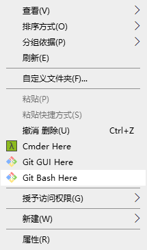
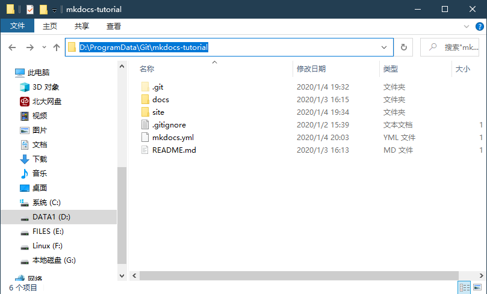
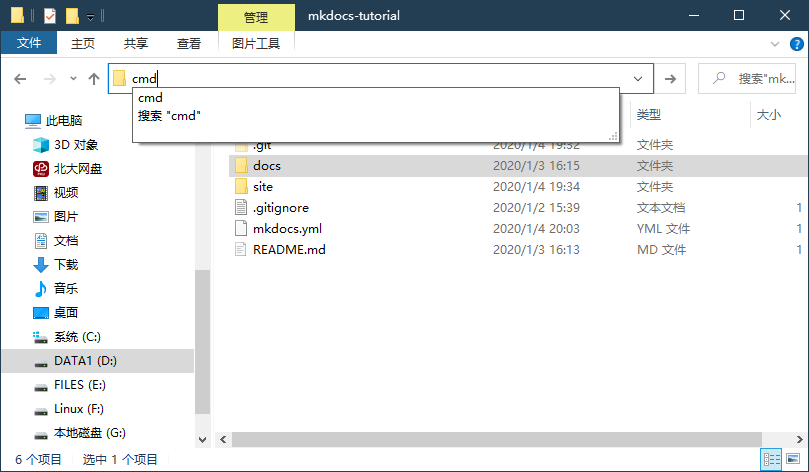
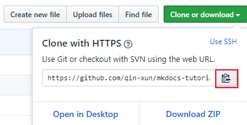
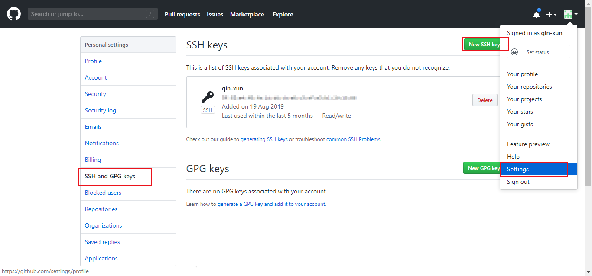
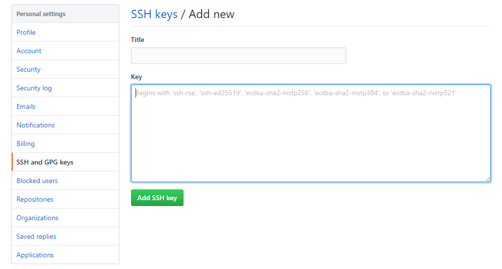

在技术文档写作中使用 Git
Git 是一个开源的分布式版本控制系统，因其版本控制和协同工作的特性，既可以托管代码，也可以托管文档。
那么 Git 和 Github 的区别是什么呢？
Git 是软件，它可在本地建立仓库，也可以在公司服务器、Github 服务器上建立仓库。
Github 是采用了 Git 作为版本控制系统的网上代码托管平台。因此 Github 可以托管各种 Git 库，并提供一个 Web 界面，以可视化的形式记录个人和项目的历史。
Git 相关知识推荐读者自行前往 菜鸟教程 学习，读者需要了解 Git 工作区、暂存区和版本库 的相关知识，此教程只介绍 Git 相关命令。
Git 安装配置
Git 支持 Linux、Solaris、Mac和 Windows 平台上运行。下载地址：
本文以 Windows 平台为例讲解各项命令。
Git 使用
Git 安装包自带 Git Bash （Git 命令行） 和 Git GUI （Git 图形界面），在当前项目文件夹空白处右击，会出现相关选项：

在我的电脑上，Git Bash 有些许 bug ， 因此不推荐大家使用。
如上图所示，可以自行安装 Cmder （https://cmder.net/）。
Cmder 是一个增强的命令行工具，不仅可以使用windows下的所有命令，还可以使用linux的命令和shell命令。
不过在这里笔者推荐使用 Windows 系统自带的命令行工具（cmd），快速打开当前文件夹路径的 cmd 方法如下：
- 进入项目文件夹，点击该项目文件夹的路径，即会选中当前路径 
- 输入 cmd ，按回车键，即可打开 
Git 基本命令
克隆仓库
如果想克隆远程仓库至本地，我们需要知道远程仓库的地址，以本项目为例，本项目的 https 地址为 https://github.com/qin-xun/mkdocs-tutorial，进入该页面后，我们点击 Clone or download ，点击 复制 icon，获得该 git 库的地址。

随后在 cmd 中输入克隆命令：
git clone [ git 仓库路径]
创建仓库
我们也可以在本地创建仓库，在合适位置新建文件夹，进入该文件夹，输入：
git init # 初始化版本库
即可创建本地仓库，这时候文件夹内会生成一个 .git 文件夹，这个文件夹是一个目录， Git 用它来跟踪、管理版本，不可随意改动。
本地仓库一开始是没有和远程仓库关联的，我们还需要关联远程库。
关联远程库
关联远程库当然需要关联你的 Github 帐号，与账号的关联通过 SSK Key 来实现，也就是要把公钥放到git服务器上，这样才有权限进行代码推送。
要生成 SSH 公钥，在当前文件夹下的 cmd 中输入：
ssh-keygen -t rsa -C "[你在 github 上注册时的邮箱]"
注意：英文状态下的 `"` ， 不可省略。
按 Enter 后，会在 C:\Users\Administrator\.ssh 下生成一个 id_rsa.pub 文件，这里面记载的是我们的 SSH 公钥。
我们用记事本打开，复制里面的内容。
登录 Github ，点击 右上角账户头像 - Settings - SSH and GPG Keys - New SSH Key ：

粘贴我们刚才复制的 SSH 公钥：

测试ssh key是否成功，输入：
ssh -T git@github.com
yes
如果出现
You’ve successfully authenticated, but GitHub does not provide shell access.
这就表明已成功连上 GitHub 。
之后，我们可以使用如下命令，把本地仓库和远程仓库关联起来：
git remote add origin https://github.com/your-username/your-repo.git
添加内容并推送到远程
命令如下：
git add . # 添加文件到版本库（只是添加到缓存区），.代表添加文件夹下所有文件
git commit -m "[what you've done]" # 提交到版本库，引号内为提交的备注，可以写你所做的工作
git push -u origin master # 推送到远程库的 master 分支
由于远程库是空的，我们第一次推送 master 分支时，加上了-u参数，这样会把本地的 master 分支和远程的 master 分支关联起来，在以后的推送或者拉取时，就可以省略掉 -u ，简化命令。
Git 其他命令
- 查看远程仓库
git remote -v - 远端抓取
git fetch - 与本地当前branch合并
git merge origin master - 把远程库更新到本地
git pull origin master# 相当于 -
比较远程更新和本地版本库的差异
git log master.. origin master -
想要在github上面删除，但又不想在本地删除文件
git rm -r --cached .idea #--cached 不会把本地的.idea删除git commit -m 'delete .idea dir'git push -u origin master -
在仓库的当前分支（一般为 master ）下新建分支并切换到新建分支
git checkout -b new-branch -
把本地的新分支推送到远程仓库并新建分支，并为远程的新建分支命名
git push origin [name-of-local-new-branch]:[name-of-remote-new-branch] -
取消本地目录下关联的远程库
git remote remove origin
注意： origin 统一指代远程仓库